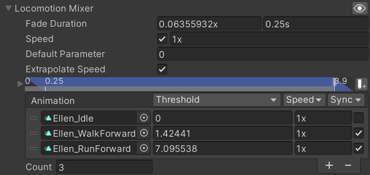

This page is part of the 3D Game Kit example.
Mecanim
Movement is handled in several steps every frame:
1. Forward Movement
PlayerController.FixedUpdate calls CalculateForwardMovement which gets the desired movement from the PlayerInput script, accelerates the current speed towards the desired speed, and sets the ForwardSpeed parameter in the Animator Controller.
void CalculateForwardMovement()
{
// Cache the move input and cap it's magnitude at 1.
Vector2 moveInput = m_Input.MoveInput;
if (moveInput.sqrMagnitude > 1f)
moveInput.Normalize();
// Calculate the speed intended by input.
m_DesiredForwardSpeed = moveInput.magnitude * maxForwardSpeed;
// Determine change to speed based on whether there is currently any move input.
float acceleration = IsMoveInput ? k_GroundAcceleration : k_GroundDeceleration;
// Adjust the forward speed towards the desired speed.
m_ForwardSpeed = Mathf.MoveTowards(m_ForwardSpeed, m_DesiredForwardSpeed, acceleration * Time.deltaTime);
// Set the animator parameter to control what animation is being played.
m_Animator.SetFloat(m_HashForwardSpeed, m_ForwardSpeed);
}
2. Blend Tree
The Locomotion Blend Tree uses the ForwardSpeed parameter to calculate the weights of its animations, which determines how they are blended.

Note how the last two animations in the Blend Tree are the same, with the second one having its speed set to 2 so that once your ForwardSpeed gets above 7.09... it will increase the speed of that animation proportionally rather than blending with a second animation. The actual maximum ForwardSpeed that the PlayerController script will allow is set to 8.
3. On Animator Move
Then Unity calls PlayerController.OnAnimatorMove which modifies the way Root Motion is applied to the CharacterController.
void OnAnimatorMove()
{
Vector3 movement;
// If Ellen is on the ground...
if (m_IsGrounded)
{
// ... raycast into the ground...
RaycastHit hit;
Ray ray = new Ray(transform.position + Vector3.up * k_GroundedRayDistance * 0.5f, -Vector3.up);
if (Physics.Raycast(ray, out hit, k_GroundedRayDistance, Physics.AllLayers, QueryTriggerInteraction.Ignore))
{
// ... and get the movement of the root motion rotated to lie along the plane of the ground.
movement = Vector3.ProjectOnPlane(m_Animator.deltaPosition, hit.normal);
// Also store the current walking surface so the correct audio is played.
Renderer groundRenderer = hit.collider.GetComponentInChildren<Renderer>();
m_CurrentWalkingSurface = groundRenderer ? groundRenderer.sharedMaterial : null;
}
else
{
// If no ground is hit just get the movement as the root motion.
// Theoretically this should rarely happen as when grounded the ray should always hit.
movement = m_Animator.deltaPosition;
m_CurrentWalkingSurface = null;
}
}
else
{
// If not grounded the movement is just in the forward direction.
movement = m_ForwardSpeed * transform.forward * Time.deltaTime;
}
// Rotate the transform of the character controller by the animation's root rotation.
m_CharCtrl.transform.rotation *= m_Animator.deltaRotation;
// Add to the movement with the calculated vertical speed.
movement += m_VerticalSpeed * Vector3.up * Time.deltaTime;
// Move the character controller.
m_CharCtrl.Move(movement);
// After the movement store whether or not the character controller is grounded.
m_IsGrounded = m_CharCtrl.isGrounded;
// If Ellen is not on the ground then send the vertical speed to the animator.
// This is so the vertical speed is kept when landing so the correct landing animation is played.
if (!m_IsGrounded)
m_Animator.SetFloat(m_HashAirborneVerticalSpeed, m_VerticalSpeed);
// Send whether or not Ellen is on the ground to the animator.
m_Animator.SetBool(m_HashGrounded, m_IsGrounded);
}
That method is long enough that it should really have been split into multiple methods. The first part where it determines the movement based on whether the character is grounded or not would do well as a separate method called something like GetMovementThisFrame which simply returns the Vector3.
Animancer
1. Setup Mixer
The Animancer character uses a Mixer State in place of the Blend Tree:
[SerializeField] private LinearMixerTransition _LocomotionMixer;
private void OnEnable()
{
Animancer.Play(_LocomotionMixer);
}

There are a few notable differences between this Mixer and the original Blend Tree (pictured in 2. Blend Tree above):
- It is defined in the Inspector instead of in an Animator Controller.
- It has the Synchronization toggle disabled for the Idle animation where the Blend Tree will always synchronise all its animations.
- It only has 3 animations and
Extrapolate Speedenabled instead of the 4 used in the Blend Tree. The Character'sMax Speedis set to 8, which is slightly above the threshold of the 3rd animation (~7). The Blend Tree used another copy of the EllenRunForward animation with its speed set to 2 and its threshold twice as high (~14) so that when the parameter reaches 8 it will essentially just be playing that animation slightly faster than normal. We could do the exact same thing in the Mixer, but theExtrapolate Speedtoggle allows it to automatically achieve the same result without manually adding a copy of the last animation.
2. Fixed Update
We also have a FixedUpdate method like the Mecanim character, but instead of one massive method that does lots of different things depending on your state this one only gets called while the character is in this state so its logic is much easier to understand:
It starts with the same calls to Character.CheckMotionState and UpdateSpeedControl that the Idle state used:
private void FixedUpdate()
{
if (Character.CheckMotionState())
return;
Character.UpdateSpeedControl();
After updating the character's speed according to its Brain, we send that value to the Mixer so it can control the blending:
_LocomotionMixer.State.Parameter = Character.ForwardSpeed;
The rest of the FixedUpdate method concerns Turning and audio.
3. On Animator Move
We want to modify the way Root Motion controls the character so we need a script with an OnAnimatorMove method attached to the same GameObject as the Animator component. But having all our main scripts on the character model itself would mean there are lots of scripts on that object and if we wanted to change the model to something else we would not be able to simply swap something else in without manually copying all the components over. So we use a simple script to redirect the root motion from the model to our Character script on another object (the Root Motion example goes into more detail about this topic):
public sealed class RootMotionRedirect : MonoBehaviour
{
[SerializeField]
private Character _Character;
private void OnAnimatorMove()
{
_Character.OnAnimatorMove();
}
}
The Character.OnAnimatorMove method is fairly similar to the Mecanim one in step #3 above, except that it has been split into several methods to be much easier to understand:
public void OnAnimatorMove()
{
var movement = GetRootMotion();
CheckGround(ref movement);
UpdateGravity(ref movement);
_CharacterController.Move(movement);
transform.rotation *= _Animancer.Animator.deltaRotation;
}
Get Root Motion
The Mecanim character's PlayerController class was responsible for determining what root motion to use depending on its state. Specifically, when grounded it used the root motion from animations and when airborne it simply applied the character's forward speed. This was bad because it meant that class needed intimate knowledge of every state. Adding a jumping attack would require modifying that method. Adding a glide ability would require modifying that method. And so on.
But since each of our states is a separate class, we can use the power of Polymorphism to give the base CharacterState class a virtual property with a default implementation so that all states will use root motion from animations by default:
// In CharacterState:
public virtual Vector3 RootMotion => Animancer.Animator.deltaPosition;
Then any states that want different behaviour such as the AirborneState can override that property:
// In AirborneState:
public override Vector3 RootMotion => Character.Brain.Movement * (Character.ForwardSpeed * Time.deltaTime);
And now the Character class can just access that property on whatever the current state happens to be, without having any specific knowledge about that state:
private Vector3 GetRootMotion() => StateMachine.CurrentState.RootMotion;
Note that there is actually more to the GetRootMotion method than just that. See Full Movement Control below.
Check Ground
Once we have the desired movement, we use a raycast to determine the orientation of the ground and rotate the movement onto that plane so we can move at a consistent speed up and down hills. This method is essentially the same as the first part of the Mecanim PlayerController.OnAnimatorMove method.
private void CheckGround(ref Vector3 movement)
{
if (!CharacterController.isGrounded)
return;
const float GroundedRayDistance = 1f;
var ray = new Ray(transform.position + Vector3.up * GroundedRayDistance * 0.5f, -Vector3.up);
if (Physics.Raycast(ray, out var hit, GroundedRayDistance, Physics.AllLayers, QueryTriggerInteraction.Ignore))
{
// Rotate the movement to lie along the ground vector.
movement = Vector3.ProjectOnPlane(movement, hit.normal);
// Store the current walking surface so the correct audio is played.
var groundRenderer = hit.collider.GetComponentInChildren<Renderer>();
GroundMaterial = groundRenderer ? groundRenderer.sharedMaterial : null;
}
else
{
GroundMaterial = null;
}
}
In the 3D Game Kit the GroundMaterial would be used by the LocomotionState and LandingState to play appropriate sounds for the surface the character is on, however the 3D Game Kit Lite (which we are using because it is far smaller so it can be downloaded easier) only has a single ground material anyway so this mechanic never comes into effect. Also, the Script Referencing issue prevents us from calling the necessary method to specify the Material when playing the sounds because UnityEvents only support methods with one parameter.
Update Gravity
The Mecanim PlayerController had a bool m_IsGrounded field in addition to the ability to access CharacterController.isGrounded so that m_IsGrounded could be set to false when the character jumps even though they will actually still be on the ground until after the next physics update is able to move them upwards. This avoids cancelling out the jump velocity with the standard downward speed that gets applied while grounded. That is certainly a simple solution to the problem, but that field is referenced in 12 places throughout the script so its actual purpose is a little hard to discern without thorough inspection.
Instead, we are using Polymorphism again to make a very specifically named StickToGround property with an obvious purpose that can be easily traced:
// CharacterState.cs:
public virtual bool StickToGround => true;
// AirborneState.cs:
public override bool StickToGround => false;
Now Character.UpdateGravity can just check that property when needed:
private void UpdateGravity(ref Vector3 movement)
{
if (CharacterController.isGrounded && StateMachine.CurrentState.StickToGround)
VerticalSpeed = -_Stats.Gravity * _Stats.StickingGravityProportion;
else
VerticalSpeed -= _Stats.Gravity * Time.deltaTime;
movement.y += VerticalSpeed * Time.deltaTime;
}
Note how the grounded speed is constantly set using = while the airborne speed accelerates downwards every frame using -=.
Full Movement Control
The Mecanim character continues playing the forward movement animations while turning (not quick turning), meaning that their root motion moves the character around in an arc towards the direction the player actually wants to go. This means that not only do you move in a direction you do not want to go during the turn, but also that you can't reliably predict which direction that will actually be because it could choose to turn either way, which is especially bad when changing direction repeatedly. The resulting movement is very frustrating for the player because it imposes an arbitrary lack of control on the character. This is the largest problem with the Mecanim Character.
| Mecanim (raw root motion) | Animancer (full movement control) |
|---|---|
| The following videos were recorded using the exact same inputs scripted to move left and right repeatedly, swapping every 0.5 seconds and not using any forward or backward input at all. The Mecanim character clearly moves forward with each cycle while the Animancer character simply moves back and forth along the starting line. Note that the same phenomenon also occurs when the character is Airborne due to the way they implemented movement even though it is entirely scripted. | |
 |
 |
| In the worst case with the right input timing the character might run almost entirely perpendicular to the direction you want to go because each change is within about 90 degrees of the target direction so it does not cross the ~145 degree threshold required to trigger a Quick Turn animation. Again, this is simulating only left and right input with no forward input. | |
 |
 |
The Animancer character solves this issue in the Character.GetRootMotion method by making it so that most states will only apply root motion in the exact direction the Character.Brain is actually trying to go and ignore any portion of the movement which is perpendicular to that direction. The result is a far more responsive character, but in exchange the root motion is not exactly what the animations would normally apply so it is trading visual realism for smoother controls.
// Inspector toggle so you can easily compare raw root motion with controlled motion.
[SerializeField]
private bool _FullMovementControl = true;
private Vector3 GetRootMotion()
{
var motion = StateMachine.CurrentState.RootMotion;
if (!_FullMovementControl ||// If Full Movement Control is disabled in the Inspector.
!StateMachine.CurrentState.FullMovementControl)// Or the current state does not want it.
return motion;// Return the raw Root Motion.
// If the Brain is not trying to move, we do not move.
var direction = _Brain.Movement;
direction.y = 0;
if (direction == default)
return default;
// Otherwise calculate the Root Motion only in the specified direction.
direction.Normalize();
var magnitude = Vector3.Dot(direction, motion);
return direction * magnitude;
}
Acceleration
The way acceleration is handled by the Mecanim character is somewhat strange and this example simply replicates that aspect of its behaviour to avoid diverging too much from it.
- One of the main reasons people use a
CharacterControllerinstead of aRigidbodyis to give the player perfect control over their character, allowing them to start and stop moving immediately instead of using forces to accelerate gradually. But then thePlayerControllerscript implements its own acceleration anyway in theCalculateForwardMovementmethod. - The forward speed only gets used in the Locomotion and Airborne states, but since
CalculateForwardMovementruns everyFixedUpdateregardless of what state the Animator Controller is actually in, the speed keeps getting updated behind the scenes when it isn't being used. So if you are Idle and you start moving, it will transition to the Locomotion Blend Tree and at the same time it will gradually increase theForwardSpeedparameter towards the desired speed. But if you are moving at full speed and perform an Attack, theForwardSpeedparameter will still stay at the desired speed (and accelerate towards a new value if it changes) during the attack animation so that when it ends and transitions back to Locomotion you are already at that speed even though you weren't really moving during the attack. The gradual transition between animations in both cases makes this effect a bit hard to spot, but it means that visually, accelerating from Idle happens slower than accelerating from an Attack (or any other action).